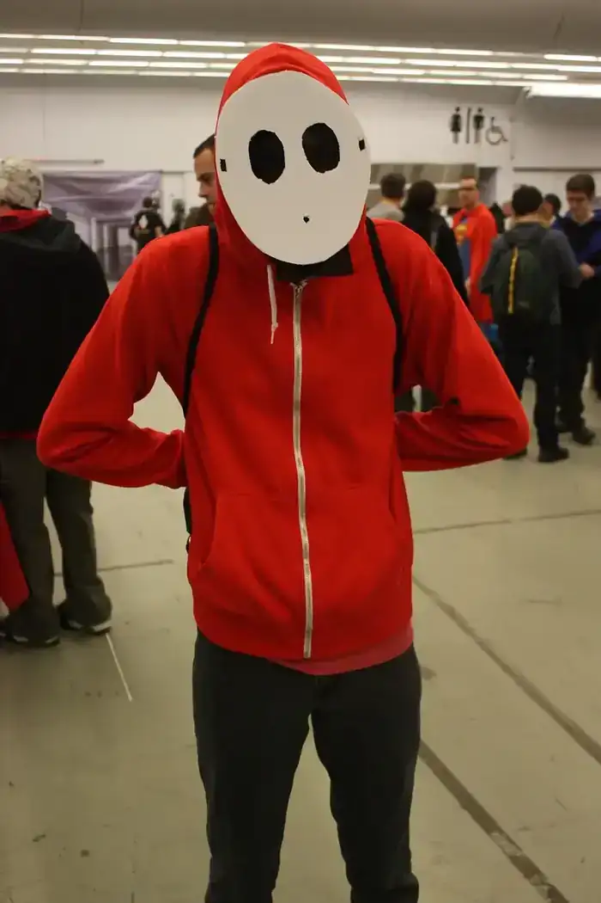
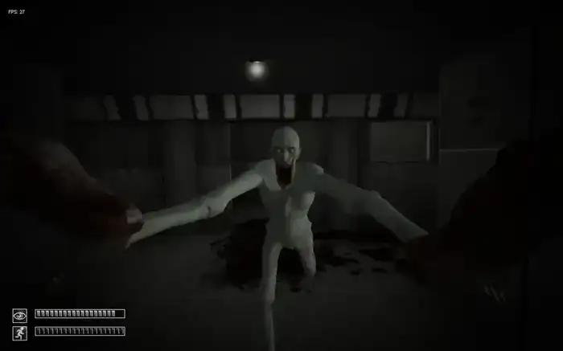
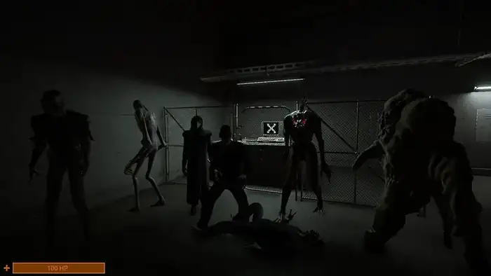

The fiction
The SCP Foundation is a collaborative writing wiki, founded in 2007, in which contributors write clinical-style documents about anomalous objects and creatures. SCP-096, 'The Shy Guy', is a humanoid that will pursue and kill anyone who sees its face, including in a photograph.
Maps, diagrams and images






The format is the appeal: containment procedures, a description, and interview logs, written as bureaucracy. It is one of the largest collaborative fiction projects on the internet.
Why it is here
Because the archive collects claims and the SCP project is explicit that it is fiction — the wiki states it, the licence states it, and the community states it. The page exists to mark the boundary: this is what an honestly labelled invented thing looks like, next to the pages where an invented thing is presented as a finding.
Documented: the fiction, its format, and its community.
Labelled: as fiction by its authors, in every context.
Not a claim: about the world, and never presented as one.
The contrast: compare the pages here where a fiction is treated as evidence.
The label: fiction — which in this archive is a compliment to the authors, not a criticism.
Why it is in the archive
Because a collection of claims needs a category for honest invention, and because the SCP wiki is the best example of it on the internet.
Open resources on this topic
- PapersOpen-access articles: DOAJ · PubMed Central · Internet Archive Scholar
- BooksPublic-domain and borrowable copies: Open Library · Project Gutenberg · Google Books · Internet Archive
Cite this page
Momin, S. (2026). SCP-096. The Larger World Archive. https://drsamonline.github.io/LARGE_GLOBE/scp-096.htmlMomin, Sohil. “SCP-096.” The Larger World Archive, 2026, https://drsamonline.github.io/LARGE_GLOBE/scp-096.html.Momin, Sohil. “SCP-096.” The Larger World Archive, 2026. https://drsamonline.github.io/LARGE_GLOBE/scp-096.html.@misc{scp2026scp,
author = {Momin, Sohil},
title = {SCP-096},
year = {2026},
howpublished = {The Larger World Archive},
url = {https://drsamonline.github.io/LARGE_GLOBE/scp-096.html},
note = {Last reviewed 20 November 2026}
}Last reviewed 20 November 2026 · Corrections policy · this page is not peer reviewed
Sources for this page
- Wikipedia, “SCP Foundation” — the project and its formaten.wikipedia.org
- Wikipedia, “Collaborative fiction” — the genreen.wikipedia.org
- Wikipedia, “Creepypasta” — the neighbouring formen.wikipedia.org
- Wikipedia, “Creative Commons” — the licence the wiki usesen.wikipedia.org